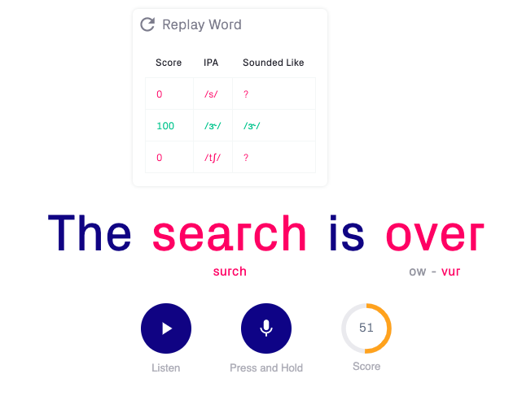
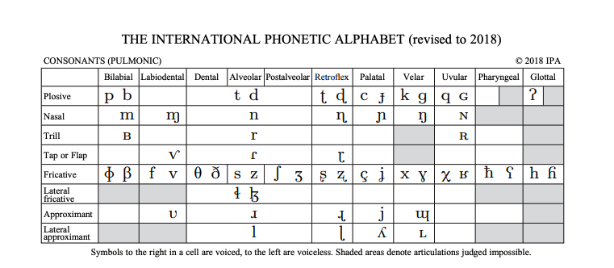

Over the 2019 summer I worked in Stockholm, Sweden at Sana Labs, a startup that builds AI products for education.
I worked with a small team of machine learning engineers and product designers on Sana Voice which is an API that scores pronunciation of English speech.
The beta for Sana Voice (which you can play with here) had been completed shortly before my arrival in June 2019.
I spent the first half of the summer helping design scoring metrics, a new remediation system, and doing some general software development.
One of my projects for the latter half of the summer was to build something that shows off the API in a more practical setting.
I created an application called Speech Coach that could provide a comprehensive pronunciation practice for someone learning English.
Speech Coach first presents a user with a diagnostic phrase to find phonemes the user has most trouble pronouncing. Users are then presented with a number of sentences to read aloud.
These sentences feature the phonemes that need improvement in various contexts to ensure thorough practice. The coach reads the phrase aloud, then prompts the user to repeat the sentence word-by-word.
The coach returns to mispronounced words at the end of the sentence. At the end of the session, a user is presented with a breakdown of their performance and phonemes they should practice pronouncing.
Conceptualizing the product
I studied French throughout high school and for four semesters in college.
I remember the frustrating feeling of studying for the semesterly oral exam where students have a graded conversation with the professor.
To prep, I would organize my talking points, familiarize myself with subject-specific vocabulary, and speak aloud to myself to practice my flow.
Yet, regularly I would receive a less-than-desired grade for my pronunciation.
How was I supposed to practice this? My textbook didn't teach me anything about pronunciation (who knows how I'd even listen to that CD in the back cover), and my
roomate who took Spanish in high school was no help either.
It was only after I spent my junior fall in Lyon, France, where I was forced to speak and understand entirely in French, where my pronunciation began to improve.
This came at no surprise; pronunciation is equally a perpetual problem as an articulatory one.
Improving pronunciation requires hearing, repeating, and correcting.
This is why my pronunciation and discrimination of unfamiliar French phonemes improved so drastically while I was abroad and why my pronunciation stays stagnant when I’m in the
silent section of the library studying my notes.

What it offers
Speech Coach offers dense, repetitive pronunciation practice. The fast turn around mimics the spontaneous nature of conversation and the “repeat-after-me” form factor is
understandable by even young kids. The constant back-and-fourth of listening and repeating is more focused pronunciation practice than, say, DuoLingo’s pronunciation feature
(which I believe does nearly nothing for improving users’ language abilities other than perhaps making sure you’re not saying a totally different word). For scenarios like the oral examination,
or perhaps someone who knows they have trouble with a few specific sounds, Speech Coach aims to identify and iron out those errors.
Implementation
Sana's API is given a target string, and a recording to analyze. It finds probabilities of different English phonemes on a fixed timestamp interval and then uses dynamic programming to sequence them. At the time of my
arrival, a user could see what part of the word they were mispronouncing and that was about it. This stage was a nice proof-of-concept, but offered little value to actual language learners. What and how exactly do I need to do
correct my pronunciation? Some of my earlier work in the summer involved devising a linguistically informed remediation system. To do this, I vectorized each phoneme in the English language using the IPA's articulation schema.
This allowed me to effectively measure the distance between two sounds. For example, the /s/ sound in "dogs" and the /s/ sound in "cats" differs only by the engagement of the vocal chords (try pronouncing both words while feeling your throat). Thus,
if a user used the wrong /s/ sound, Sana Voice could provide precise feedback on how to correct the pronunciaiton (e.g. "Engage your vocal chords!"). This project was implemented in Python and integrated to the backend of the API.

I built Speech Coach in React, largely because the existing demo had been built in React. Because the project involved a lot of dynamic screens and different views (interface for the diagnostic phase, the practice phrase screens, the results page),
at times this project felt like learning to animate in React. To read the phrases aloud, I used Google’s text-to-speech API. I cached the audio files, and rendered them in the DOM as audio elements so I could know when they’d stopped playing.
This posed some asynchronous challenges because the user could pause in the middle of the computer pronunciation.
Perhaps if I were to do the project again, I would’ve developed it for mobile off the bat. That said, by working in React I learned a lot about designing scalable applications with
different Component hierarchies, and communicating asynchronously between different elements.
Beyond the proof-of-concept
Unfortunately my time at Sana ended before I was able to implement all the features I had hoped to add. In particular, I was hoping to add some sort of analysis feature that aggregated all the users’ phoneme errors and
contexts of those errors. I imagined a visualization of the mouth that might demonstrate exactly how the tongue should be moving, and how it is moving.
I also considered implementing a story mode, where instead of reading random phrases, a user might be reading a story while working on pronunciation.
What is pronunciation correction?
Throughout the summer, I couldn’t help but ask why are we building what we are building? There are so many different English accents and dialects, all of which are correct.
So how do you score an English pronunciation? Many people have written on this subject, but I felt it was particularly relevant to address this question while working on a product that implies a “correct”
way of speaking English and undeniably privileges a General America accent.
For the purposes of this project, I imagined the target user being a non-native English speaker who hopes to bring their English from a state of hard-to-understand by any English speaker to comprehendible.
Under these parameters, I believe the Speech Coach product can help pull a non-native English accent toward a more recognizable way of speaking. That said, above a certain threshold, a better Speech Coach
score does not represent a better English pronunciation - just better General American pronunciation.